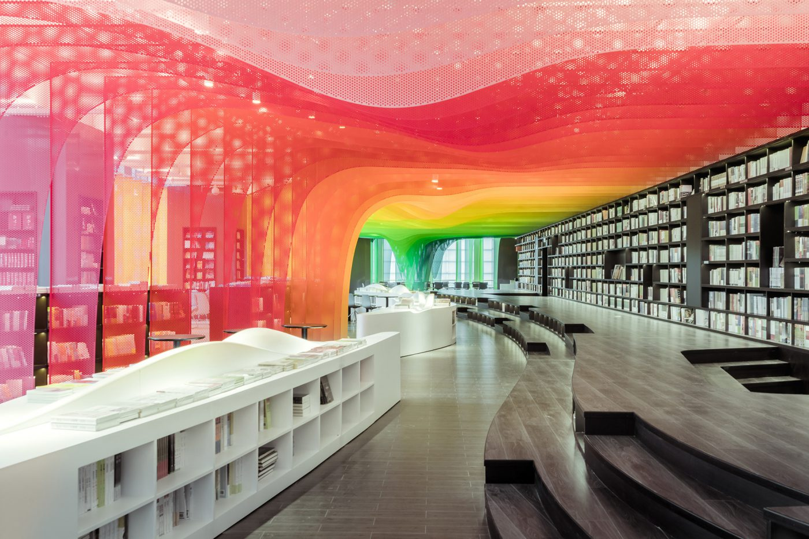
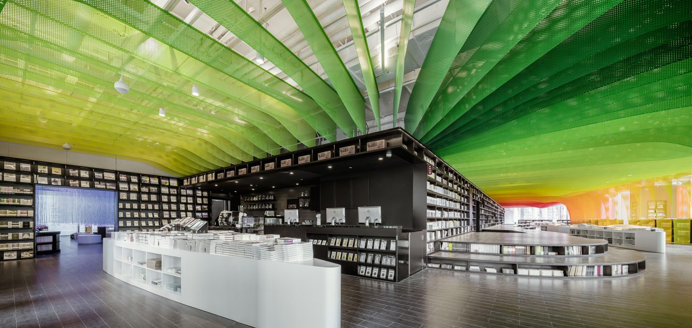

Бурно развивающийся Китай представляет настоящий рай для архитекторов и дизайнеров: публика рада каждой новинке, а возрастающая застройка дает простор для творчества и новых идей.
Так дизайнеры компании WUtopia Lab предложили украсить книжный магазин в провинции Сучжоу довольно необычным образом. Покупатели привыкли видеть магазины книг спокойным местом, где стоят строгие стеллажи, полные литературных произведений, а в читательском зале ничто не отвлекает от главного занятия. Но в этом книжном магазине есть чему удивляться: его потолок украшает каскад сетчатых алюминиевых пластин всех цветов радуги.
Радужный градиент тянется через все заведение, придавая каждой секции магазина свое особое настроение. Необычную композицию дизайнеры назвали «Занаду радуг».
«Что-что радуг?» — спросите вы? Занаду или Шанду — это название исторического и важного для китайцев места. Так назывался город, который заложил внук Хингис-хана Хубилай, дав начало новой китайской империи Юань. Путешественники рассказывали, что посреди новой столицы располагался роскошный цветной шатер Губимая, приводя в восторг и трепет всех, кто его видел. Интересно, удалось ли добиться такого же эффекта от нового дизайна книжного магазина?
А в то время как в книжных магазинах Поднебесной проводят радикальные эксперименты с дизайном, жители Старого света развлекаются более сдержанно.
На этом все!